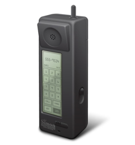
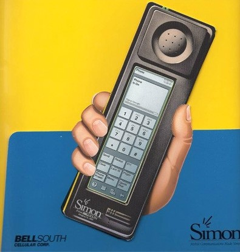
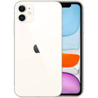

역사
최초의 스마트폰은 사이먼(Symon)으로 추정된다. IBM사가 1992년에 설계하여 그 해에 미국 네바다 주의 라스베이거스에서 열린 컴댁스에서 컨셉 제품으로 전시되었다.
 |
 |  |
활용
스마트폰 활용의 핵심은 다양한 애플리케이션을 이용할 수 있는 애플리케이션 스토어에 있다. 애플리케이션 스토어는 게임, e북, 음악, 사진, 동영상 등 사용자들이 원하는 애플리케이션과 콘텐츠를 쉽게 내려받을 수 있게 해주는 서비스로 애플의 앱스토어 출시 이후 활성화되었다. 노키아, 구글, 마이크로소프트 등에 이어 통신사업자, 인터넷 포털과 모바일 소프트웨어 개발 기업들도 사업진출을 시도했다.
안드로이드
안드로이드(영어:Android)는 휴대 전화를 비롯한 휴대용 장치를 위한 운영 체제와 미들웨어, 사용자 인터페이스 그리고 표준 응용 프로그램(웹 브라우저, 이메일 클라이언트, 단문 메시지 서비스(SMS), 멀티미디어 메세지 서비스(MMS 등)을 포함하고 있는 소프트웨어 스택이자 모바일 운영체제이다.
아이폰
아이폰(영어 : iphone)은 2007년 1월 9일, 애플이 발표한 휴대 전화 시리즈이다. 미국 샌프란시스코에서 열린 맥월드 2007에서 애플의 창업자 중 한 명인 스티브 잡스가 발표했다.
샘플
 |
 |
 |
 |
 |